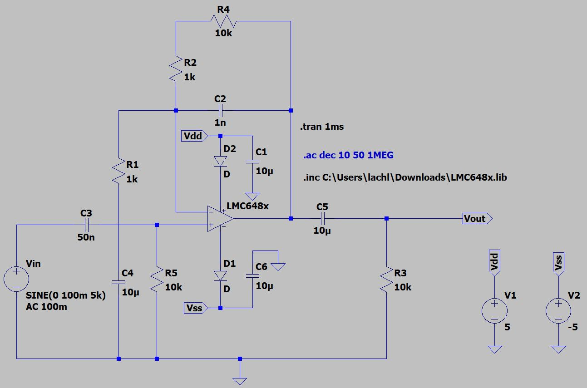
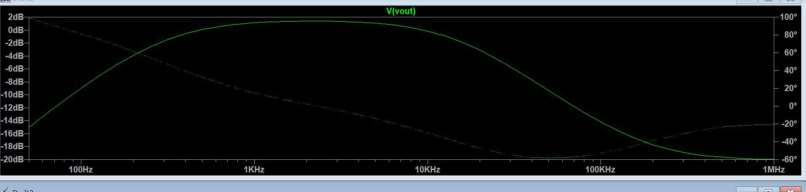
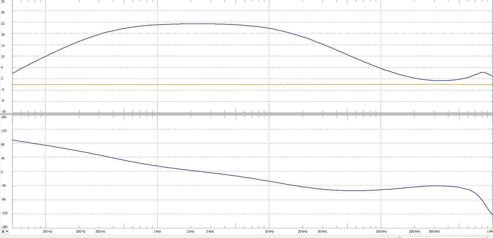
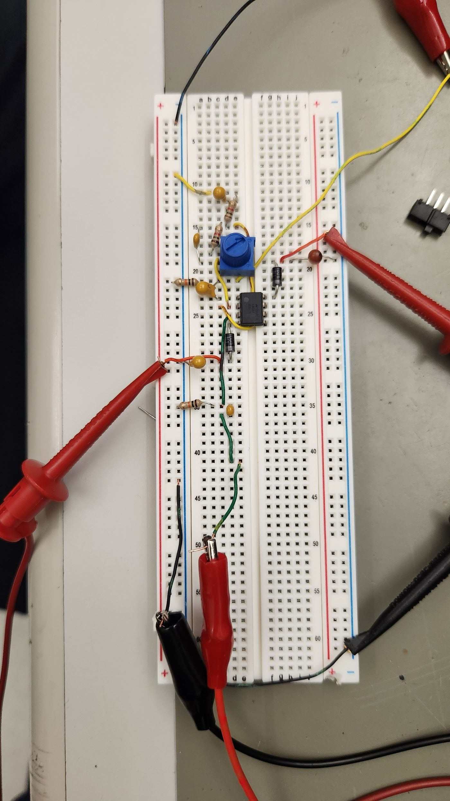
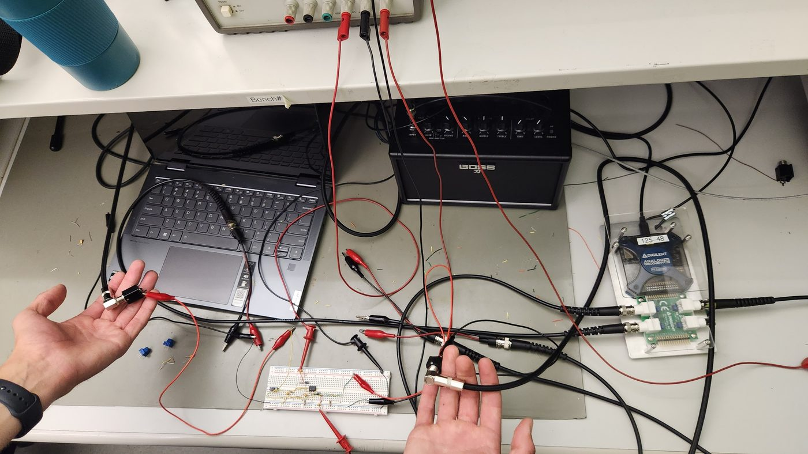
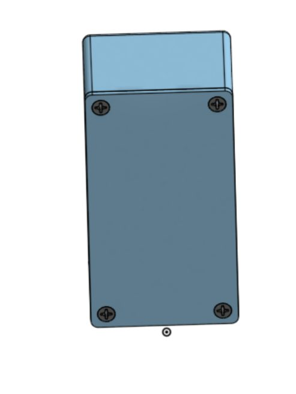

Watts & Cseh Electronics
2026
- Co-founded a venture hand-building analog guitar effects pedals from scratch.
- Designed and built a single-knob treble boost pedal with true bypass.
- Took the circuit from hand calculations and SPICE simulation to a 3D-printed enclosure.
Collaborators
Links / info

What we're building
Watts & Cseh Electronics is a small venture a few friends and I started with a simple goal: build guitar effects pedals the way they were made back in the good old days, from a handful of analog parts, a footswitch, and a metal box wired together by hand. Before everything went digital, that simplicity is what gave those old circuits their character, and it is what we set out to recreate by designing our effects from the ground up. Our first finished product is a single-knob treble boost with true bypass, an effect that lifts the high end of a guitar's signal to help it cut through a mix and push an amp harder, with a footswitch that takes the circuit completely out of the signal path when it is off.
Designing the circuit
Under the hood it is an analog bandpass filter built around an op-amp gain stage: a high-pass filter cascaded with a low-pass filter that together pass roughly 300 Hz to 15 kHz, the range where a guitar's presence and bite live, while rolling off the muddy lows and harsh highs. I started with hand calculations to pick component values for those cutoffs and a target gain, then verified the transfer function and gain in a SPICE simulation before building anything.

 
Both the simulated and measured curves show the same bandpass shape and a peak gain around 12, so the built circuit matched the design closely.
Building and testing it
I built the circuit on a breadboard and tested it into a practice amp, checking it with an oscilloscope at low, mid, and high frequencies and sweeping the full response on a network analyzer. It behaved exactly like a real treble boost should: bright, cutting, and clean, and playing a guitar straight through the breadboard confirmed it.
 
The enclosure
A pedal needs a real box you can stomp on, so rather than buy a stock enclosure I modeled and 3D-printed a custom chassis sized around the circuit board, the knob, the footswitch, and the input and output jacks. Designing it ourselves means every pedal we build next can share the same housing and grow into a consistent product line.

Where it's going
Next we move the proven circuit off the breadboard onto a soldered board inside the printed enclosure, refine the design, and start on the effects that follow. We are just getting started, but the first pedal proved out the whole process, from a hand-drawn circuit all the way to something you can plug a guitar into and play.